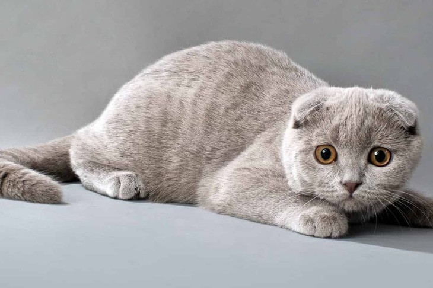
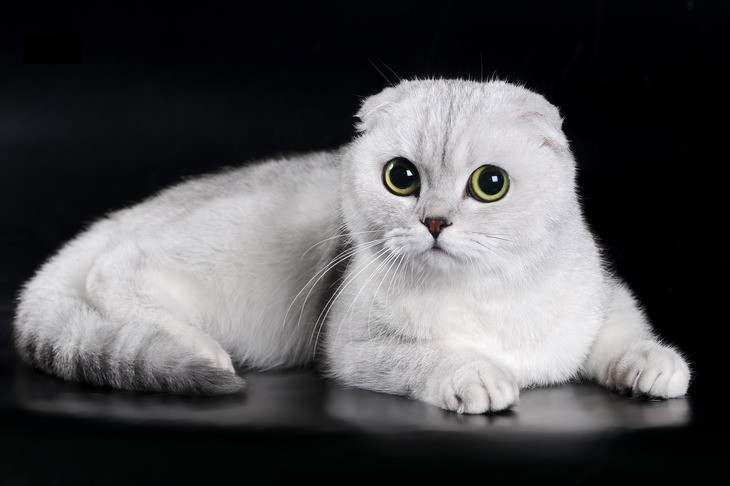
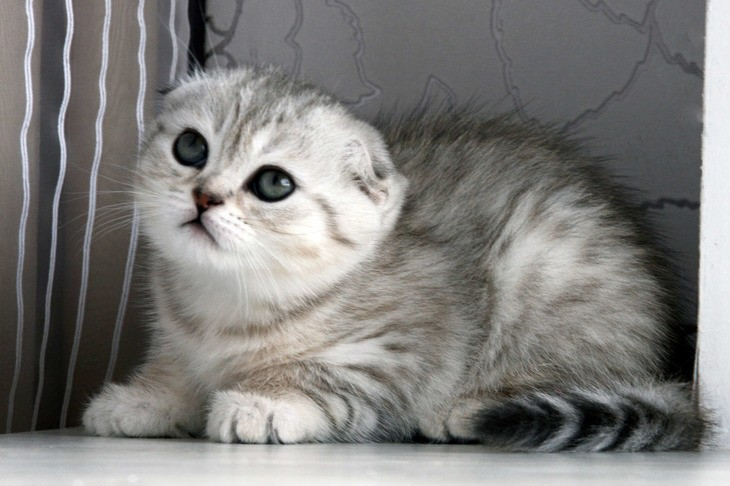
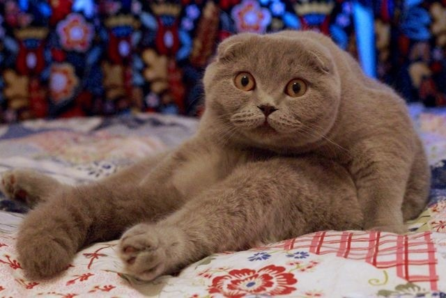

Шотландская вислоухая кошка – пушистая радость в доме!
Порода скоттиш-фолд, или как ее называют еще, шотландская вислоухая, завоевала большую
популярность среди
любителей кошачьих благодаря своему покладистому нраву и милой мордашке. Сегодня мы расскажем о породе
шотландских
вислоухих кошек подробнее!
Стандарты породы скоттиш-фолд:
- Стройные лапы средней длины.
- Мускулистое тело и прямая спинка.
- Округлая мордочка с щечками.
- Короткий, но широковатый носик.
- Большие глаза, цвет которых зависит от цвета шерсти.
- Маленькие уши с закругленными кончиками, которые составлены вперед и вниз.
- Короткая, плотная шерсть.Также встречаются и длинношерстные представители.
- Средней длины хвост, который сужается к кончику.
- Средний размер и вес от четырех до шести килограммов. Самцы, как правило, крупнее самок.
- Окрас может быть любым.

Следует добавить, что эта порода возникла не в результате искусственного скрещивания, а сама по
себе, благодаря
случайной мутации.
Характер кошек скоттиш-фолд:
Это милые кошки, которые легко адаптируются к новому окружению и людям. Преданные
животные обычно выбирают для
себя лидера в семье и доверяют только ему. Поэтому могут ходить по пятам и требовать взамен уважения
и ласки.
Мягкий характер этих кошек способен растопить ваше сердце, даже если вы не в духе.
В целом эти кошки не слишком навязчивы и вполне послушны. Они не будут разрушителями
и
дебоширами в вашем доме.
Более того, скоттиш-фолды боятся высоты, поэтому вам не придется вытягивать кошку с высоких шкафов вашей
квартиры.
Что касается обидчивости , то если вы забыли погладить их или покормить, то они запомнят это и
всячески будут
показывать, что вы неправы, но недолго.
В юном возрасте, как и многие молодые кошки, шотландские вислоухие любят
поиграться.
Котята будут удивлять вас
своими необычными смешными позами и выражением мордочки.

Когда кошкам что-то понадобится, они не будут орать, а мило будут издавать ненавязчивые звуки.
Кстати, представителей этой породы можно даже дрессировать! Если заниматься обучением с детства,
ваш котенок
вырастет очень смышленым, будет понимать, что нельзя забираться на кровать к хозяину и воровать еду.
Кроме того, они могут стоять в стойке на задних лапах, когда проявляют интерес к чему-либо
увиденному.
Конфликтов у шотландцев с другими животными, как правило, не возникает. Они к незнакомцам
быстро привыкают.
Кроме того, не паникуют в новых местах, когда видят других кошек, например, на выставке.
Уход и кормление:
- Минимальный уход за шерстью короткошерстных шотландцев составляет расчесывание раз в неделю. Если шерсть у
скоттиш-фолдов длинная, то уходу требуется уделять 2-3 раза в неделю. Сначала расчешите шерсть мягкой
массажной щеткой, чтобы быстро избавиться от лишних ворсинок, а затем проведите по направлению роста
волосков гребнем с редкими и толстыми зубьями. В уходе не используйте пуходерку, так как она выдирает
подшерсток и значительно портит внешний вид кошки.
- У кошек этой породы регулярно скапливается ушная сера, поэтому на чистку ушей важно обращать больше
внимания.
- Не забывайте и о чистке зубов! Ежедневная чистка поможет предотвратить заболевания пародонта. А также
осматривайте когти своего котика. Их рекомендуется подпиливать, а не состригать.

- Не забывайте и о чистке зубов! Ежедневная чистка поможет предотвратить заболевания пародонта. А также
осматривайте когти своего котика. Их рекомендуется подпиливать, а не состригать.
- Приучение к туалету котят этой породы, как правило, не занимает много времени и усилий. Кстати, не
забывайте держать лоток для туалета в безупречной чистоте. Кошки известны своей гигиеной, а чистый туалет
поможет сохранить шерсть ухоженной.
- Котята также рано начинают понимать назначение когтеточки. Поэтому, приобретайте и ее, если хотите
сохранить мебель в целости и сохранности.
- Если ваш кот имеет темный окрас шерсти, то купать его необходимо 3-4 раза в год. Если же животное светлого
или белого окраса, то количество водных процедур можно увеличить. Но учитывайте, что делать это нужно по
необходимости. После душа не забывайте проверять состояние ушек и глазок. Аккуратно протирайте их ватным
тампоном.
Пару слов о кормлении:
Кормление кошки породы скоттиш-фолд должно быть на основе натуральных продуктов. Выбор готового корма тоже
будет неплохой альтернативой, но надо понимать, что ветеринары и заводчики рекомендуют разнообразное питание
и
обильное питье.
Старайтесь угощать питомца нежирным мясом (курица, индейка, говядина), рыбой (кроме речной), молочными
продуктами, творогом. Давайте сырые овощи и в отварном виде, добавляйте в мясо крупы. Баклажаны, лук,
чеснок
и
томаты кошкам категорически запрещены!
Кормить нужно 2-3 раза в день. Часто менять марку корма нельзя, чтобы не навредить
желудку. Жирную,
копченую,
маринованную и сладкую пищу давать кошке на пробу также не рекомендуется!

Чем обычно болеют шотландские вислоухие кошки?
Среднестатистическая продолжительность жизни этих кошек – 15 лет. В случае отличной наследственности, уходе
и
питании отдельные представители этой породы доживают и до 22 лет!
- Прежде чем приобретать котенка, обратите внимание на его лапы и хвост – они не должны быть слишком
жесткими
и малогибкими, так как это будет вызывать в дальнейшем у животного сильные боли, а хозяину доставлять
немалые хлопоты.
- У этих питомцев сложная свертываемость крови, и при незначительном порезе кровотечение бывает трудно
остановить.
- Вислоухие шотландцы быстро подхватывают бронхит, поэтому не стоит устраивать дома сквозняки.
- Кроме того, у этой породы встречается гипертрофическая кардиомиопатия. Это специфическая
форма заболевания
сердца.
Для кого подойдут шотландские вислоухие?
Для людей преклонного возраста, во-первых, так как эти представители кошачьих не
терпят агрессии и
повышенных
тонов, они не любят хаос и могут долго время быть зацикленными на одном предмете или человеке. При
неправильном
воспитании и неблагоприятной атмосфере кошки могут вырасти очень трусливыми и слабыми.
Если у вас большая семья с детьми и выбор падает на шотландскую вислоухую, то вы
можете не беспокоиться об
их
поведении. Они любят внимание, которое получают от детей, но те должны относиться к ним достаточно вежливо.
Они
также любят играть.В целом, это довольно семейные кошки. Подойдут и для семей с собаками.